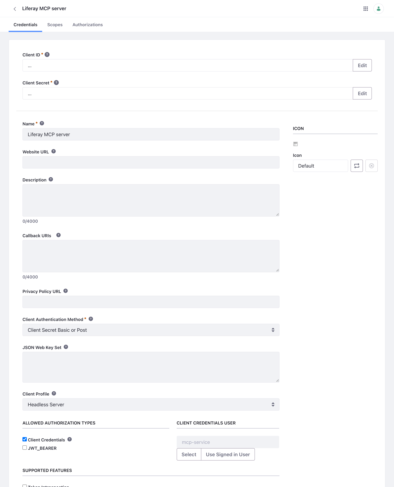

Installing on Liferay PaaS
On Liferay PaaS, you add the OAuth 2 client extension to your PaaS project’s repository, and deploy it with the rest of the project. The server then runs outside Liferay Cloud, on each person’s computer or on a server of yours, with the application’s credentials copied from Liferay.
These steps haven’t been run on a Liferay PaaS environment yet. They were checked with a PaaS project’s Liferay Workspace locally, as described below. Running the server as a service inside Liferay Cloud isn’t covered.
- Step 1: Prepare the Project
- Step 2: Add the Client Extension
- Step 3: Copy the Credentials for the Server
- Step 4: Run the Server
- Without a Client Extension
- How This Was Checked
- Related Information
Step 1: Prepare the Project
Follow Liferay’s Configuring Liferay PaaS for Client Extensions. In particular, if your infra environment doesn’t have the client extension build pipeline, ask Liferay Cloud Support to enable it.
Step 2: Add the Client Extension
- Download
client-extension.yaml, or its read-only version,liferay-mcp-oauth-read-only.client-extension.yaml, and check itsuserAccountScreenNameandscopes, as in Changing the Client Extension. - Save it as
liferay/client-extensions/liferay-mcp-oauth/client-extension.yamlin your PaaS project’s repository. -
Push the project. In the Liferay Cloud console, open Builds, and on the new build choose Deploy Build to…, then your environment.
The build packs the folder into
liferay-mcp-oauth.zip, and puts it in the Liferay service’s image, inosgi/client-extensions. When the Liferay service starts, it creates the application and its credentials.
When the deploy finishes, Control Panel → Security → OAuth 2 Administration shows the Liferay MCP server application:

Step 3: Copy the Credentials for the Server
The server isn’t in Liferay Cloud, so it can’t read Liferay’s routes. Write them yourself: create a folder named liferay-mcp-oauth with these four files, copying the values from the application’s page in OAuth 2 Administration, where Liferay shows the client extension’s Client ID and Client Secret:
| File | Content |
|---|---|
liferay-mcp-oauth-headless-server.oauth2.headless.server.client.id |
The Client ID |
liferay-mcp-oauth-headless-server.oauth2.headless.server.client.secret |
The Client Secret |
liferay-mcp-oauth-headless-server.oauth2.headless.server.scopes |
The application’s scopes, separated by spaces, as in the client extension file |
liferay-mcp-oauth-headless-server.oauth2.token.uri |
/o/oauth2/token |
Copy the scopes file too: without it, the server treats the connection as read-only.
The folder holds the application’s client secret. Keep it readable only by the server, like any password. On Liferay Self-Hosted, deploying the client extension again keeps the same credentials. On Liferay PaaS this hasn’t been checked: after a deploy, if the server reports invalid_client, copy the Client ID and Client Secret again.
Step 4: Run the Server
With LIFERAY_URL set to your environment’s Liferay address, for example https://webserver-myproject-prd.lfr.cloud:
- On each person’s computer: give each person a copy of the folder, securely, and follow With Claude Code, With the Claude Desktop App, or Other AI Assistants.
- Shared, over HTTPS, on a server of yours: follow For Services and People.
Without a Client Extension
If you can’t deploy client extensions, create the application in the Control Panel instead:
-
In Control Panel → Security → OAuth 2 Administration, click New, and fill in:
Field Value Name Liferay MCP serverClient Profile Headless Server Allowed Authorization Types Client Credentials only: clear JWT_BEARER Client Credentials User Click Select, and choose the service user Leave Callback URIs empty: a Headless Server doesn’t need one.
-
Click Save. The application’s Credentials tab then shows its Client ID and Client Secret:

- On its Scopes tab, select the scopes listed in the client extension file, and click Save.
- Write the routes folder as in Step 3, with its Client ID and Client Secret.
Checked on Liferay DXP 2025.Q1.29: an application made this way, with the four files written by hand and LIFERAY_URL set, connected the server with OAuth 2 and all nine scopes, and its searches returned the site’s content.
How This Was Checked
With the Liferay Workspace of a Liferay PaaS project (DXP 2025.Q1, Workspace plugin 12.1.10), the client extension added in liferay/client-extensions/liferay-mcp-oauth/:
blade gw buildbuiltliferay-mcp-oauth.zip.- The Workspace’s
dockerDeployandcreateDockerfiletasks put it in the Liferay image, inosgi/client-extensions, as the PaaS build does. - That image, started on Liferay DXP 2025.Q1.29, created the application and its credentials at startup.
- The server, with those credentials and
LIFERAY_URL, connected with OAuth 2 and all nine scopes, and its searches returned the site’s content.
Not covered: the Liferay Cloud build pipeline and console themselves, and copying the credentials from OAuth 2 Administration on Liferay Cloud.